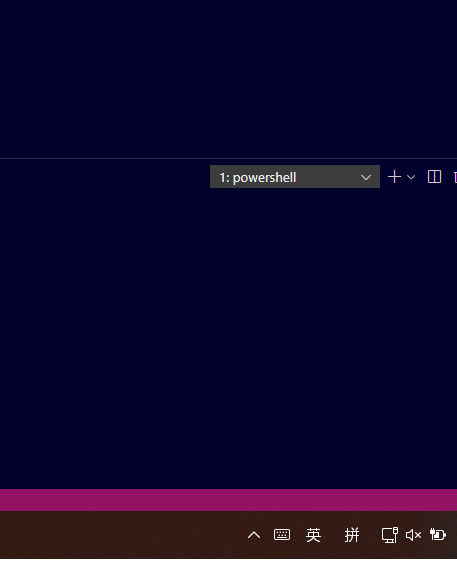

Thoughts flow.
输入，也可以有直觉。
白色指针 · 英文状态
交互示意 · 点击切换，体验状态变化 · 图案可自行配置
A SMALL CHANGE, A CLEAR SIGNAL.
不用猜现在
是哪种输入法。
微软拼音的中文、英文状态，有时只差一个 Shift。DynCursor 定期检测前台窗口的输入状态，把区别放到你正在看的光标上。
了解如何配置默认状态
使用启动时保存的指针图案。
自定义状态
使用你配置的替换指针图案。
查看项目实际效果录屏 GIF
项目历史录屏，用于展示核心效果。展开播放，收起即可停止显示。

READY WHEN YOU ARE.
三步，让状态看得见。
- 01 /
下载并完整解压
下载 ZIP，保留程序旁的
下载 DynCursor.zipconfig和resources文件夹，无需安装。 - 02 /
给指针配一组图案
在 Windows「鼠标属性 → 指针」中修改帮助选择、候选、不可用图案。包内
查看配置截图resources/cur提供示例。 - 03 /
启动，切换，感受一下
运行
查看默认配置DynCursor.exe，切换微软拼音中英文状态。默认改变箭头、文本和链接三类指针。
运行退出命令，程序会先恢复光标再关闭。
.\DynCursor.exe --stopGOOD TO KNOW.
开始前，
你可能想知道。
一个小工具，把一件事做好。
支持哪些输入法？
默认面向 Windows 上的微软拼音与简体中文（0804）。可以在配置文件中添加其他语言编码；第三方输入法能否正确报告状态，需要按实际环境验证。
怎么退出？强制结束后怎么恢复？
运行 DynCursor.exe --stop 正常退出并恢复光标。如果进程被强制结束，确认已经退出后运行 DynCursor.exe --reset-cursors，或在 Windows 鼠标属性中重新应用指针方案。
从 0.2.1 升级需要注意什么？
先在任务管理器中结束旧版进程，再运行新版。旧版不支持新的 --stop 命令。原 YAML 配置格式保持兼容，完整变化可查看更新日志。
如何设置开机启动？
按 Win + R，输入 shell:startup，把 DynCursor.exe 的快捷方式放入打开的启动文件夹。程序与配置文件仍保留在原来的解压目录中。
为什么切换后没有变化？
先检查来源指针是否已经设置为不同图案，并确认没有旧版进程同时运行。可用 DynCursor.exe --check-config 检查配置。修改配置或系统指针方案后，需要退出并重新启动程序。